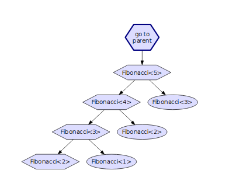

Use templight and Templar to debug C++ templates
C++ has some very good tools to debug, profile and analyze source files and executables. This all works well for standard runtime program. But, when you are using templates, you sometimes want these tools to act at compile-time. And at this point the support is much more scarce.
templight and Templar and two tools that are trying to fix this issue.
From the templight site:
Templight is a Clang-based tool to profile the time and memory consumption of template instantiations and to perform interactive debugging sessions to gain introspection into the template instantiation process.
and Templar is a visualization tool for the traces generated by templight.
Installation
Unfortunately, the templight installation is not user-friendly at all. You need to clone the complete LLVM/Clang tree and add templight inside it before compiling the complete clang toolchain. But that is the case for all clang-based tools... You also need to patch clang but that may not be necessary in the future. The complete instructions are available here.
The installation of Templar is much more convenient:
git clone https://github.com/schulmar/Templar.git git checkout feature/templight2 cd Templar qmake . make sudo make install
The branch feature/templight2 has much more features than the master and should support both Qt4 and Qt5, but I have only tested it on Qt4.
Example
Let's use the class Fibonacci function as an example:
#include <iostream> template <std::size_t N> struct Fibonacci { static constexpr const std::size_t value = Fibonacci<N-1>::value + Fibonacci<N-2>::value; }; template <> struct Fibonacci<1> { static constexpr const std::size_t value = 1; }; template <> struct Fibonacci<0> { static constexpr const std::size_t value = 0; }; int main(){ std::cout << "Fibonacci<5>:" << Fibonacci<5>::value << std::endl; }
Nothing fancy here, we're simply printing the fifth Fibonacci number on the console.
You can compile it with templight++:
templight++ -Xtemplight -profiler -Xtemplight -memory -Xtemplight -ignore-system -std=c++14 main.cpp
All the templight options starts with -Xtemplight and then you can use any clang++ options. This will generate a a.memory.trace.pbf file in the current directory. You can then run Templar. use File > Open Trace to open the trace file. This should open a window of this sort:

The top-left panel contains the source code of the application, automatically refreshed whenever you move in the template tree. In the top right, there is the template instantiation graph. In the bottom left, you'll see a list of list of files to be able to filter them and in the bottom right, you'll see the list of templates events. You can sort the list of template events by duration which is really convenient. You can then select Fibonacci<5> by double clicking it in the list (once sorted, it should be near the top). This should give you a tree looking something like that:
The edgy nodes are template instantiations and the round nodes are template memoization. We can directly see that each instantiation was only done once. I think this graph view is really helpful if you need to debug computation done at compile time. You can see that that not all nodes are displayed, this is because there is a limit on the displayed depth. Simply click on Fibonacci<3> and the remaining nodes will be shown.
I have already used this tool to find the most time-consuming templates in ETL an DLL. This is a great tool to indicate where you should focus on improving the template compile-time. I have also been able to find some unnecessary instantiations that could be avoided (either with SFINAE or with refactorings).
templight also contains a fully-fledged debugger for template programs, but I haven't tested it.
Conclusion
In conclusion, I would say that templight and Templar are really helping with template debugging and profiling. There is a real lack of tools in this domain and I hope to see more tools of this kind in the future. I hope this will help you develop template-heavy programs or template metaprograms.
Comments
Comments powered by Disqus